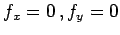
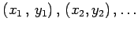
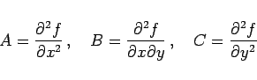
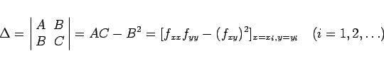

Inhalt Index DeskTop Bronstein

 Differentialrechnung Differentiation von Funktionen von mehreren Veränderlichen Extremwerte von Funktionen von mehreren Veränderlichen
Differentialrechnung Differentiation von Funktionen von mehreren Veränderlichen Extremwerte von Funktionen von mehreren Veränderlichen


Wenn u =f(x,y) gegeben ist, wird das Gleichungssystem  gelöst, damit die erhaltenen Wertepaare  in
|  | (6.70) |
eingesetzt werden können. Durch Diskussion des Ausdrucks
|  | (6.71) |
bestimmt man die Art des Extremwertes: